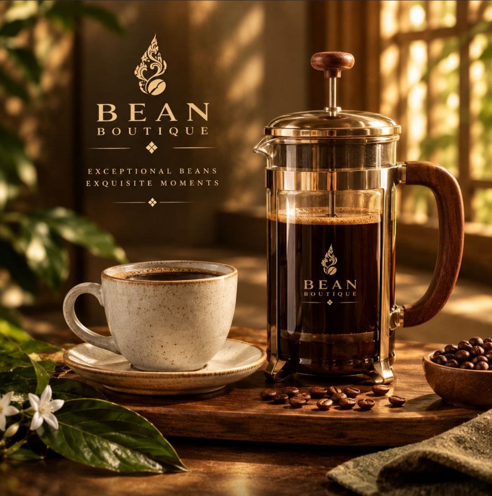

IMMERSION BREWING
French Press
A classic brewer that produces rich, full-bodied coffee with simple preparation.
Best for
Morning coffee and shared brews.
How to use
Add coarse-ground coffee and hot water. Stir gently and steep for about four minutes. Press the plunger down slowly and pour the coffee.
£35.00